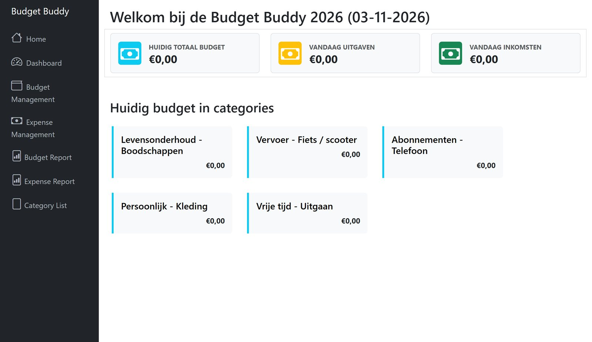
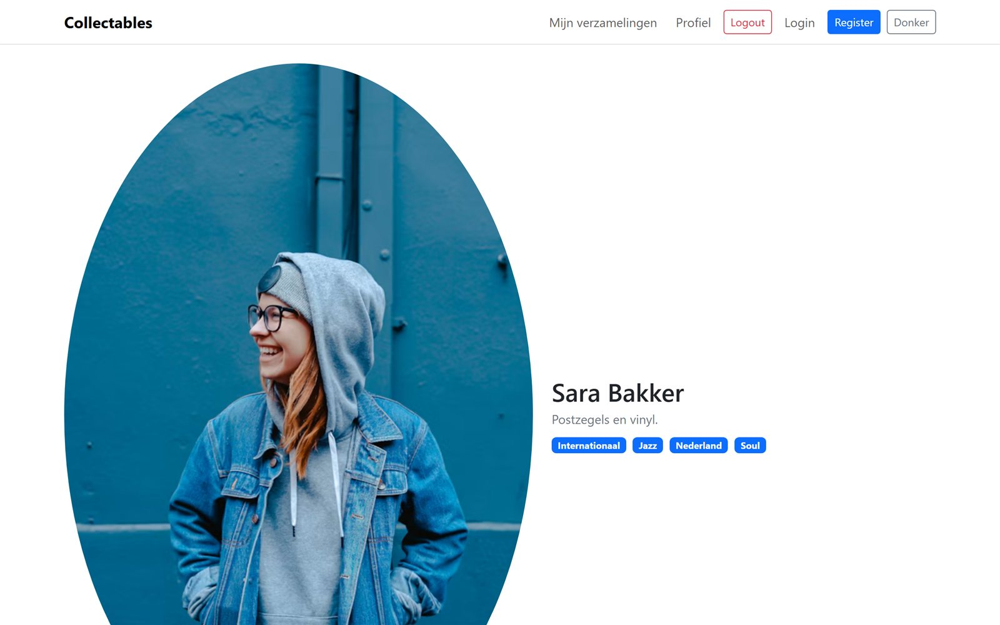
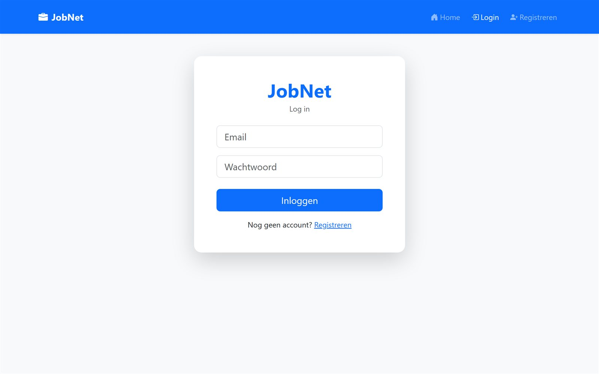

Budget Buddy
Een Symfony-app om je geld bij te houden. In één dashboard zie je je budget, uitgaven en inkomsten per categorie. Teamproject, periode 5.
Ik ben Adam, student Software Development (MBO 4) aan ROC Mondriaan in Delft. Ik werk zowel aan de frontend als de backend: van database tot de interface die mensen gebruiken. Vanaf februari 2027 ben ik op zoek naar een stage in softwareontwikkeling.

Een Symfony-app om je geld bij te houden. In één dashboard zie je je budget, uitgaven en inkomsten per categorie. Teamproject, periode 5.

Een webapplicatie om verzamelobjecten toe te voegen, te bekijken en te beheren, met naam, categorie, beschrijving en afbeelding. Teamproject, periode 4.

Een LinkedIn-achtig platform waar je je kunt registreren, kunt inloggen en een eigen profiel hebt. Teamproject, periode 3.